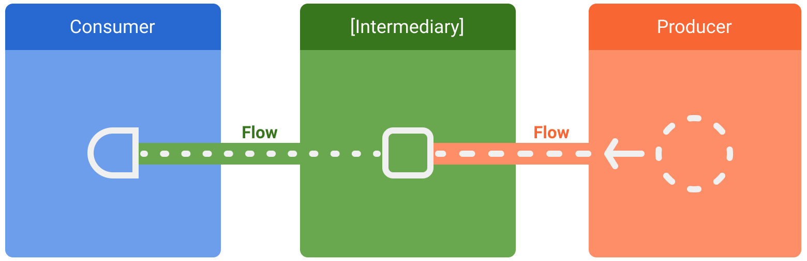

In coroutines, a flow is a type that can emit multiple values sequentially, as opposed to suspend functions that return only a single value. For example, you can use a flow to receive live updates from a database.
Flows are built on top of coroutines and can provide multiple values.
A flow is conceptually a stream of data that can be computed
asynchronously. The emitted values must be of the same type. For
example, a Flow<Int> is a flow that emits integer values.
A flow is very similar to an Iterator that produces a sequence of
values, but it uses suspend functions to produce and consume values
asynchronously. This means, for example, that the flow can safely make a
network request to produce the next value without blocking the main
thread.
There are three entities involved in streams of data:
- A producer produces data that is added to the stream. Thanks to coroutines, flows can also produce data asynchronously.
- (Optional) Intermediaries can modify each value emitted into the stream or the stream itself.
- A consumer consumes the values from the stream.

In Android, a repository is typically a producer of UI data that has the user interface (UI) as the consumer that ultimately displays the data. Other times, the UI layer is a producer of user input events and other layers of the hierarchy consume them. Layers in between the producer and consumer usually act as intermediaries that modify the stream of data to adjust it to the requirements of the following layer.
Creating a flow
To create flows, use the
flow builder
APIs. The flow builder function creates a new flow where you can manually
emit new values into the stream of data using the
emit
function.
In the following example, a data source fetches the latest news automatically at a fixed interval. As a suspend function cannot return multiple consecutive values, the data source creates and returns a flow to fulfill this requirement. In this case, the data source acts as the producer.
class NewsRemoteDataSource(
private val newsApi: NewsApi,
private val refreshIntervalMs: Long = 5000
) {
val latestNews: Flow<List<ArticleHeadline>> = flow {
while (true) {
val latestNews = newsApi.fetchLatestNews()
emit(latestNews) // Emits the result of the request to the flow
delay(refreshIntervalMs) // Suspends the coroutine for some time
}
}
}
// Interface that provides a way to make network requests with suspend functions
interface NewsApi {
suspend fun fetchLatestNews(): List<ArticleHeadline>
}Flow.ktThe flow builder is executed within a coroutine. Thus, it benefits
from the same asynchronous APIs, but some restrictions apply:
- Flows are sequential. As the producer is in a coroutine, when calling
a suspend function, the producer suspends until the suspend function
returns. In the example, the producer suspends until the
fetchLatestNewsnetwork request completes. Only then is the result emitted to the stream. - With the
flowbuilder, the producer cannotemitvalues from a differentCoroutineContext. Therefore, don't callemitin a differentCoroutineContextby creating new coroutines or by usingwithContextblocks of code. You can use other flow builders such ascallbackFlowin these cases.
Modifying the stream
Intermediaries can use intermediate operators to modify the stream of data without consuming the values. These operators are functions that, when applied to a stream of data, set up a chain of operations that aren't executed until the values are consumed in the future. Learn more about intermediate operators in the Flow reference documentation.
In the example below, the repository layer uses the intermediate operator
map
to transform the data to be displayed on the View:
class NewsRepository(
private val newsRemoteDataSource: NewsRemoteDataSource,
private val userData: UserData
) {
/**
* Returns the favorite latest news applying transformations on the flow.
* These operations are lazy and don't trigger the flow. They just transform
* the current value emitted by the flow at that point in time.
*/
val favoriteLatestNews: Flow<List<ArticleHeadline>> =
newsRemoteDataSource.latestNews
// Intermediate operation to filter the list of favorite topics
.map { news -> news.filter { userData.isFavoriteTopic(it) } }
// Intermediate operation to save the latest news in the cache
.onEach { news -> saveInCache(news) }
}Flow.ktIntermediate operators can be applied one after the other, forming a chain of operations that are executed lazily when an item is emitted into the flow. Note that simply applying an intermediate operator to a stream does not start the flow collection.
Collecting from a flow
Use a terminal operator to trigger the flow to start listening for
values. To get all the values in the stream as they're emitted, use
collect.
You can learn more about terminal operators in the
official flow documentation.
As collect is a suspend function, it needs to be executed within
a coroutine. It takes a lambda as a parameter that is called on
every new value. Since it's a suspend function, the coroutine that
calls collect may suspend until the flow is closed.
Continuing the previous example, here's a simple implementation of
a ViewModel consuming the data from the repository layer:
class LatestNewsViewModel(
private val newsRepository: NewsRepository
) : ViewModel() {
init {
viewModelScope.launch {
// Trigger the flow and consume its elements using collect
newsRepository.favoriteLatestNews.collect { favoriteNews ->
// Update UI with the latest favorite news
}
}
}
}Flow.ktCollecting the flow triggers the producer that refreshes the latest news
and emits the result of the network request on a fixed interval. As the
producer remains always active with the while(true) loop, the stream
of data will be closed when the ViewModel is cleared and
viewModelScope is cancelled.
Flow collection can stop for the following reasons:
- The coroutine that collects is cancelled, as shown in the previous example. This also stops the underlying producer.
- The producer finishes emitting items. In this case, the stream of data
is closed and the coroutine that called
collectresumes execution.
Flows are cold and lazy unless specified with other intermediate
operators. This means that the producer code is executed each time a
terminal operator is called on the flow. In the previous example,
having multiple flow collectors causes the data source to fetch the
latest news multiple times on different fixed intervals. To optimize and
share a flow when multiple consumers collect at the same time, use the
shareIn operator.